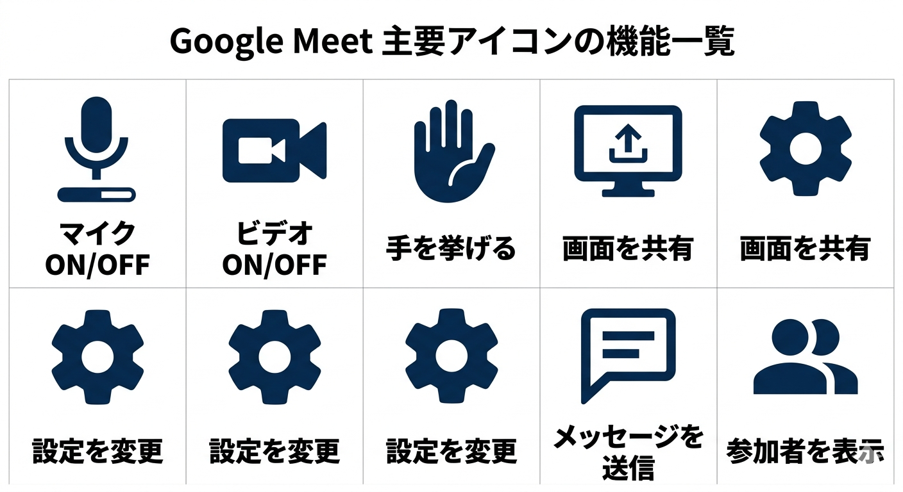
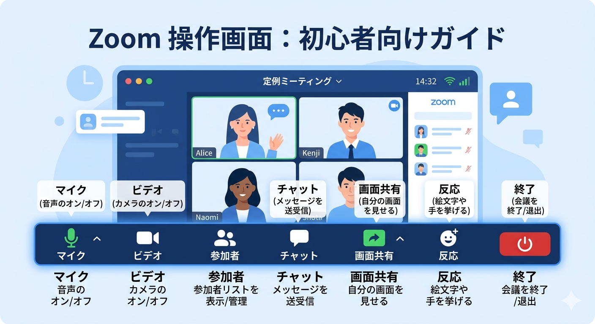
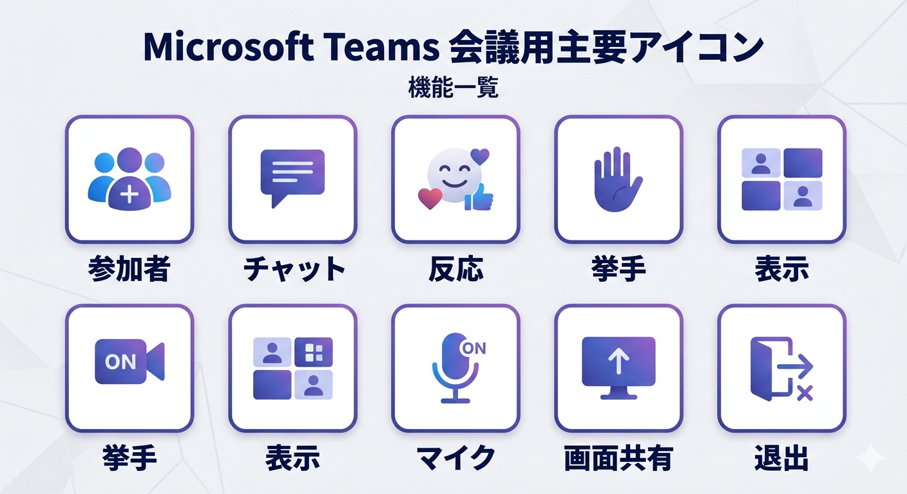
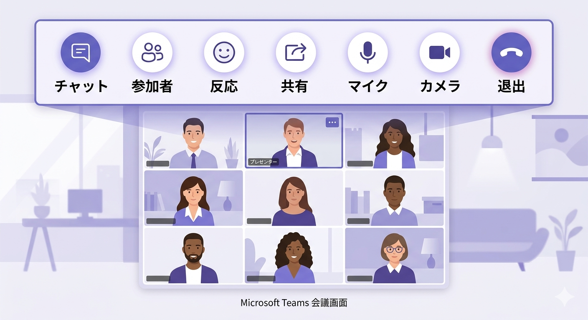

1. Web面接前に確認しておきたいこと
Web面接では、受け答えの内容だけでなく、事前の環境整備が面接全体の進行と印象に大きく影響します。まずは、機材、通信、操作環境を落ち着いて確認できる状態を整えます。
Web面接では、受け答えの内容だけでなく、事前の環境整備が面接全体の進行と印象に大きく影響します。まずは、機材、通信、操作環境を落ち着いて確認できる状態を整えます。
Fnキーのロック状態によって操作方法が変わる機種もあるため、音量や明るさの調整方法も事前に把握しておくと安全です。
映像や音声が途切れると、それだけで印象に影響する場合があります。面談室以外を使用する場合は特に通信の安定性を確認します。
Google Meet、Zoom、Microsoft Teams は、入室方法や画面構成、マイクとカメラの位置がそれぞれ異なります。面接直前に慌てないよう、一度触っておくことが重要です。

入室前にマイクとカメラの状態を確認しやすく、ブラウザ参加もしやすい構成です。


URL参加、アプリ起動、ブラウザ参加の入り口を確認し、音声設定の切り替え位置も把握しておきます。


表示名、カメラ、マイク、背景処理の状態を確認し、会議画面に切り替わる流れを一度見ておくと安心です。


特にOSの通知は相手側に大きく響く場合があります。音量ミキサーや通知設定も事前に触っておくと安心です。